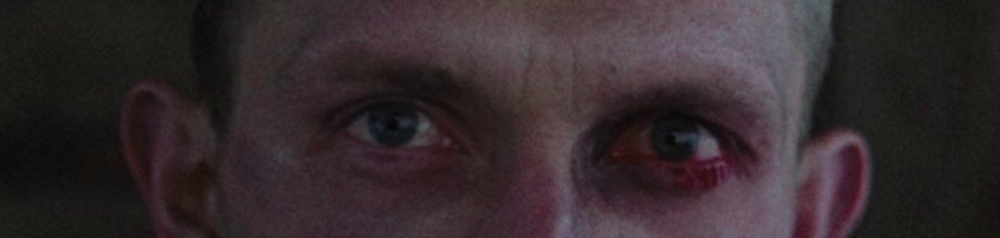

Areus
Where did the dragons go?
OnlyFans is a pimp ring, where older women are used to usher in newcomers, receiving a dividend from their referral links, if successful they gain a portion of the profits OnlyFans girls are not innocent This is the same argument with drug dealing, where the popular position is to advocate for criminalizing the dealers and not the consumers. I believe for OnlyFans everyone is responsible, even the models punishing them sets a precedent of course there are those who have been groomed I consider every person voluntarily in this field to be retarded. On a societal level we need to fix this, on a personal level they need to take responsibility. People need to make the right decision. We need a strong deterrent. Muting the natural consequences only serves to prop up the industry. Held in overt sexual slavery, isolated and abused into the industry, preyed on by predators into the industry, groomed by society at a young age, soulless psychopaths looking for profit The psychopaths advertise the industry because it makes them money and they help isolate the victims. They could have been victims at one point but are now victimizers.

You can never reform from being a porn distributor, You can never reform from being an enabler of exploitation, only victims can truly be saved. There are a plethora of girls that were coerced into the industry at a young age, either via economic means, emotional abuse, grooming, etc. They don't deserve to be shunned for being born into They offer a ___ perspective that is needed I doubt the others that reform into ____
Why do they care about your data?
Pornhub releases data yearly going over a plethora of user statistics, most common categories, most common pornstars, etc. but, have you ever wondered why a company that allows child pornography to slip through their moderation would be so focused on statistics? Going so far as to publicly categorize it all for the world to see? Organized into neat infographics that could be shared anywhere? Me neither.
.png)